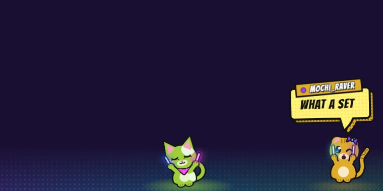
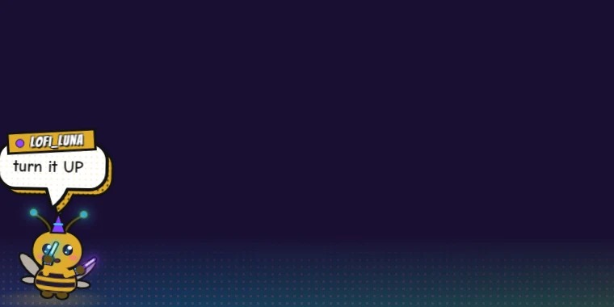
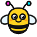
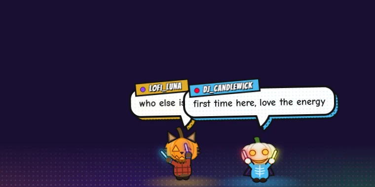
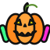

Rave Cat Chat
Every chatter becomes a glowstick-waving cat that dances to the beat and says their message in a comic speech bubble.
- Twitch
- Kick
- YouTube
- TikTok
Free overlays & widgets for your stream. No accounts, no downloads — paste a link into OBS and your chat starts dancing.

Every chatter becomes a glowstick-waving cat that dances to the beat and says their message in a comic speech bubble.


Chat overlayThe same party, but buzzier. Chatters show up as dancing bees with headphones, shades and glowsticks. BZZZ! KAPOW!


Chat overlaySpooky season rave! Chatters show up as jack-o'-lanterns in costume, from vampires to astronauts, and each one always gets the same look. BOO! MWAHA!

"What are we playing?" Fill the wheel with your games, give it a spin on stream, and let fate decide. Surprise visitors included.

Let it snow! Flakes drift over your stream, pile up along the bottom, and build themselves into snowmen that wave for a while before melting away.

"Stream starts in…" Design a countdown with your own fonts, colors and effects, then paste the link into OBS. Everyone counts down to the same moment.
New overlays and widgets get added here as they're built. Check back soon!
1920 and Height
1080 (or your canvas size).